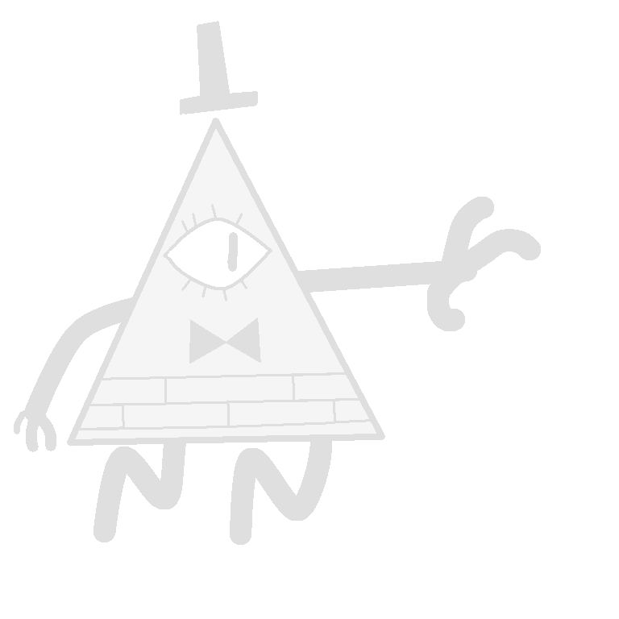

Hai.
kau pasti mengira "Ini Website apaan? burik amat".
ya emang :v aku hanya mencoba saja untuk bio di Whatsapp ku.
Dan aku yakin kalian menuju kesini karena ngeliat bio WhatsApp ku.
Jadi Inilah website yang kubuat secara sederhana dengan CSS Untuk desainnya seperti font, border, dll.
Wanna See Something More?
Click here to see more about CSS
I made something new! Check itu out! (i'm not saying its worth it)
FAQ
Frequently Asked Questions
(i think)
Q = Question
A = Answer
(in case you don't know)
Q: Lewat mana bikinnya?
A: hp. apk acode di playstore
Q: gimana host websitenya?
A: aku pake Github buat host website ini
Q: kok ngerti make html dan css?
A: aku memang sudah tertarik dengan bahasa pemrograman sejak sd dulu, jadi dari dulu sampai sekarang masih inget caranya (walau gak ngembang keknya)
Q: biasa kalo gak ngerti nyari diyt gak?
A: kadang iya, kadang mempelajari terlebih dahulu, kalo ada yang salah liat diyoutube atau google biar ngerti.
Q: ini kau yang bikin?
A: waduh, pertanyaan yang menarik.
ya jelas lah, siapa lagi
Q: pelajaran apa yang kamu sukai?
A: Good Question! aku suka Bahasa Inggris dan Komputer karena aku emang udah bisa aja sih, dari dulu aku main game dengan bahasa Inggris atau nonton video berbahasa Inggris, juga aku tertarik dengan komputer saat kecil jadi aku ingin mempelajari sedikit sedikit
Q: Apakah website ini akan terus update atau apa?
A: tergantung aku inget apa nggak dengan website ini :v
aku juga jarang punya ide jadinya mungkin jarang update
@2024 azzam_arsyad
